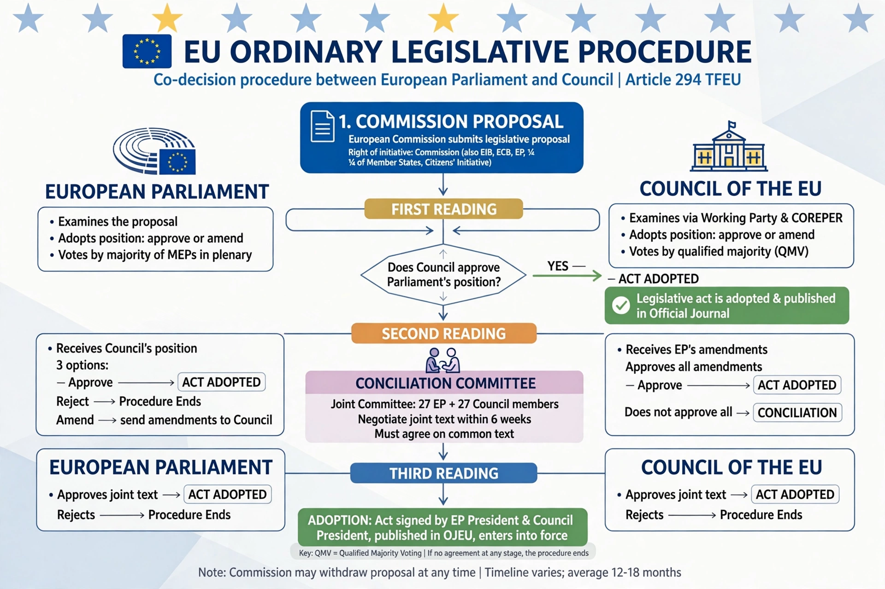

Ordinary legislative procedure

The ordinary legislative procedure is the main legislative procedure of the European Union, under which the European Parliament and the Council of the European Union act as co-legislators on a proposal from the European Commission. Known as codecision before the Treaty of Lisbon (2009) renamed and extended it, it now applies to the great majority of EU policy areas, including the single market, environment, transport, consumer protection and much of justice and home affairs.
Stages
The Commission submits a proposal to both institutions. In the first reading, Parliament adopts a position (by simple majority of votes cast); the Council may approve that position, in which case the act is adopted, or adopt its own position, sending the file back. In the second reading, Parliament may approve the Council's position, reject it by an absolute majority of its members (killing the act), or amend it, returning it to the Council, which can accept the amendments or not. If disagreement persists, a Conciliation Committee of equal numbers from both institutions, with the Commission mediating, has six weeks to agree a joint text, which must then be approved by both sides in a third reading; failure at any point means the act falls.
Trilogues
In practice, most files are concluded at first reading through informal "trilogue" negotiations between representatives of Parliament, Council and Commission, which agree a compromise text that both institutions then formally adopt. Supporters credit trilogues with efficiency; critics argue they reduce transparency and the role of plenary debate.
Special procedures
Where the ordinary procedure does not apply, "special legislative procedures" give one institution the lead — for example, the Council legislating after merely consulting Parliament, or Parliament legislating with Council consent — in areas such as certain taxation and foreign policy matters. See also Elections to the European Parliament.